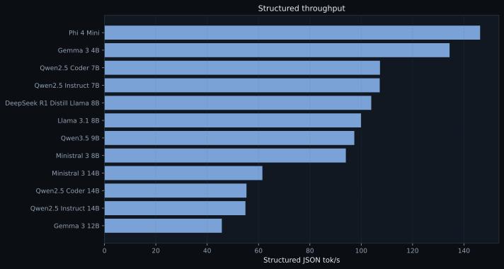
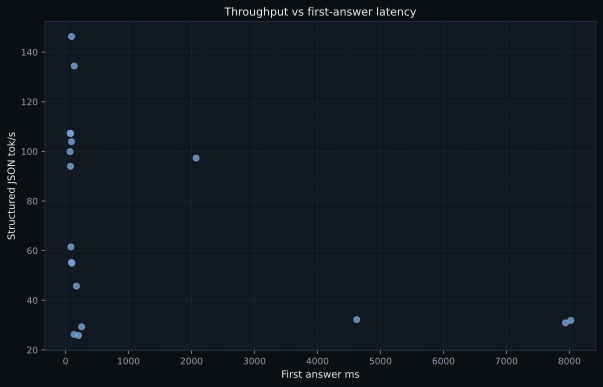

| Model | Lane | Think | JSON tok/s | First answer ms |
|---|---|---|---|---|
| Phi 4 Mini | core | default | 146.3 | 95.1 |
| Gemma 3 4B | core | default | 134.4 | 137.7 |
| Qwen2.5 Coder 7B | core | default | 107.3 | 72.1 |
| Qwen2.5 Instruct 7B | core | default | 107.2 | 80.0 |
| DeepSeek R1 Distill Llama 8B | core | default | 103.9 | 93.4 |
